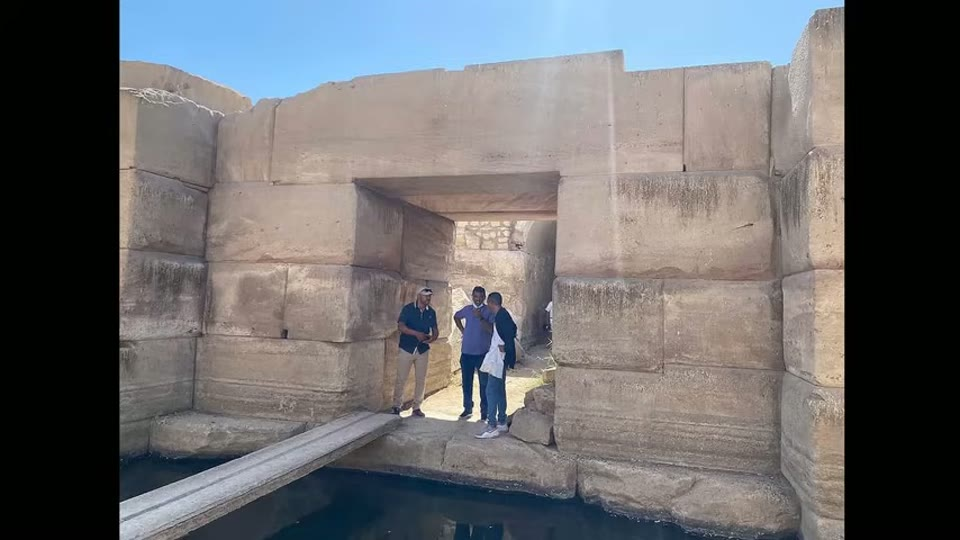
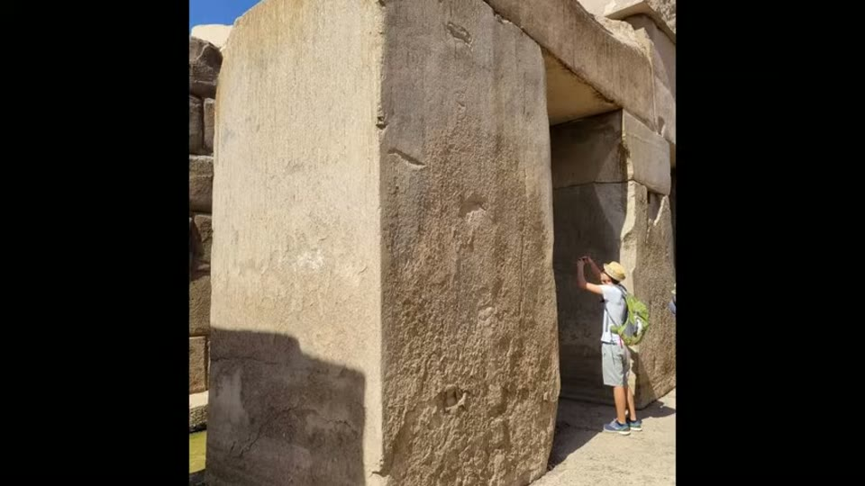
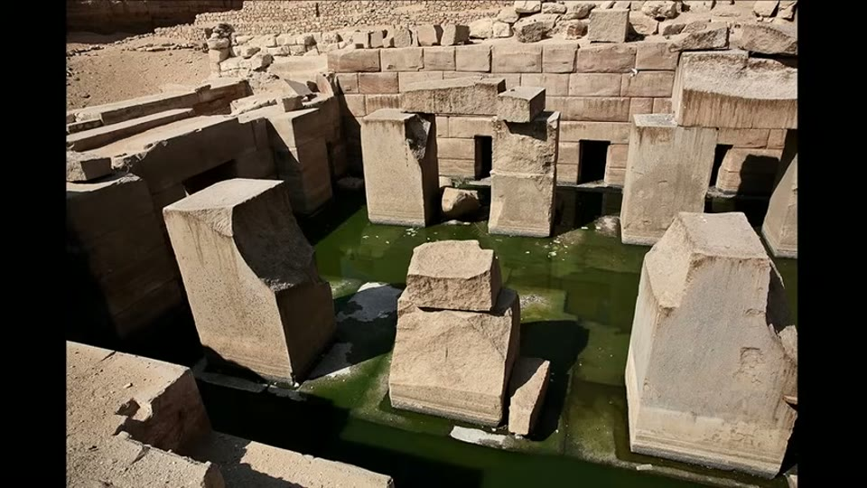
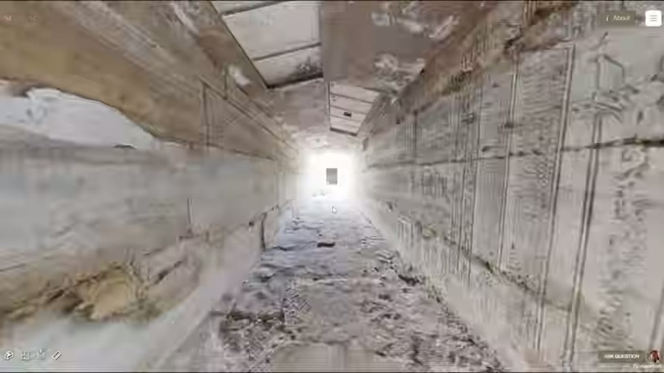
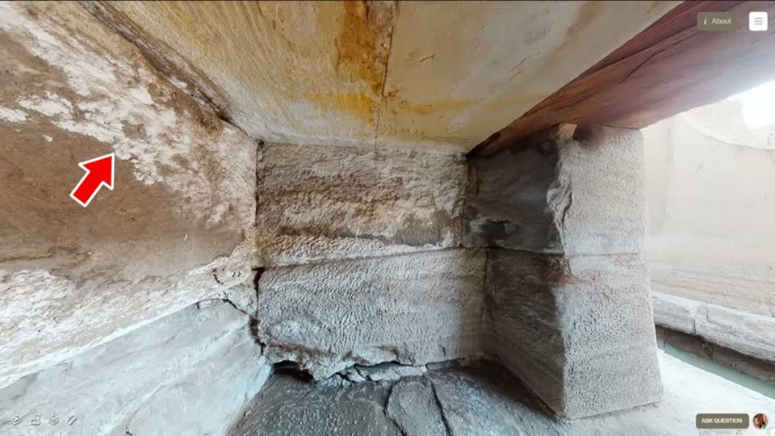

Curious Being
Osireion Water Mystery & Anomaly Revealed through Rarely Known Features
Tina · 25 min · watch on YouTube · summarised 2026-09-28
The Osireion is a mostly submerged underground structure at Abydos. Her standing proposal, set out in the earlier entry, is that it is a megalithic water-collecting facility — a well and cistern combined — sited to connect to several water sources including deep paleowater aquifers.
This video tests that proposal against the building's structural oddities, and it is the more technical of the two.
The starting observation 00:25–00:56: a wrap-around channel 15 m deep and over 2 m wide isolates the central island and blocks access to the niches and the end chamber. Tourists cross it today on modern wooden boards. Without them, a visitor could get no further than the front transverse hall — so the building has no circulation path, and was not designed for people to move around in.

Without modern additions there is no way past the front hall.
The water is cleaner than it should be
The analyses she draws on 02:03–06:58, which are published rather than hers:
A 2022 paper finds the Osireion water is a mixture of three waters — Old Nile Water from before the Aswan High Dam of 1970, Recent Nile Water from after it, and paleowater from deeper aquifers.
A 2015 paper compared the Osireion with five nearby drilled wells and the Nile, 11 km / 6.8 miles away, on weekly water-level monitoring plus physical, chemical, biological and isotope analysis. What it found:
| Physical | the Osireion had the lowest total dissolved solids and electrical conductivity, and the highest pH — a little above the 6.5–8.5 potable range, with the 2011 data inside it |
| Chemical | fewer minerals than most nearby wells — lower calcium, sodium, magnesium, bicarbonates and chlorine. The 2011 and 2015 Osireion readings deviate on potassium, CO₃ and NO₃ |
| Microbiological | much lower total and faecal coliform bacteria than any other well |
The argument she builds on it runs against expectation 05:22–06:53. Groundwater drawn from a drilled well is naturally filtered by the sand and earth holding it, so it ought to be the cleaner sample. The Osireion is the opposite of a protected source: a large open pool full of debris, with birds on it and tourists beside it. And yet its water is less brackish, lower in minerals and lower in bacteria than the wells around it.
Her inference is that the Osireion has both cleaner intake sources and some built-in filtering that still works. She rules out the obvious mechanism herself: sand filters remove sediment and bacteria but cannot remove dissolved salts or minerals, and they need regular backwashing to keep working. Whatever the Osireion is doing removes minerals too, and has done it unattended — which is why she describes the building as a well, a cistern and a water treatment facility at once.
Twice over, the physical picture is unfinished 07:13–07:57. Seismic scanning puts the central island's depth at about 15 m into the sand and found it is "not solid masonry but rather to contain voids or other irregularities". And the building has never been completely dewatered: pumping at 500 gallons per minute, new water came in from the bottom faster than the pumps could clear it.
Three structural features nobody talks about
The core of the video 06:58–11:26.
The enclosure walls are 6 m / 20 ft thick, in sandstone — as thick as a two-storey building is tall. Her point is about cost: a wall like that is enormously labour-intensive, so its presence implies structural necessity rather than decoration. Very thick masonry buys structural integrity, thermal performance, waterproofing and durability.
The island is tied to the walls. In the 1925/26 season Henri Frankfort drained the east channel to 3.8 m below the central island, clearing debris in places to more than 5 m down, and uncovered two "thrust beams" — 1.10 m thick and 1.25 m wide — connecting the island to the east wall, their tops 4.15 m below the island. So the apparently isolated island is structurally integrated with the enclosure. She adds that similar beams probably exist elsewhere in the channel, which is an inference rather than a finding.

The central island is structurally tied to the enclosure walls below the waterline.
It stands on a limestone foundation, and the foundation is bigger than the building. In 2008 and 2010 James Westerman's team drilled bore holes. One outside the channel, on the south-eastern scarp, reached 22 m before hitting hard Issawia limestone — about 15 m down measured from the central island. Three inside the western channel reached about 6 m before recovering Issawia limestone fragments, though whether those were in place or fallen is not known.
The control is what makes it 10:17–10:51: five test wells drilled west of the Osireion went down past 70 m, one to 103 m, and encountered no rock formation at all — only Qena sand and Kom Ombo conglomerate. Ground-penetrating radar and seismic scanning agree that there are no natural rock formations in the area. Westerman and the geologist Dr Bahay Issawi concluded that the hard limestone, with the sand and clay section, "were used as the foundation for this magnificent structure."
And because the bore hole outside the enclosure hit limestone at 22 m, the foundation extends beyond the walls — which, as she notes, is how foundations are designed when stability and moisture protection are the concern.
Why a cistern needs to be this heavy
Here the video stops describing and starts arguing 11:26–16:41.
She states the ordinary reading first and does not dismiss it: the oversized pillars and thick walls may have been to carry a heavy roof and the overburden above it. "That could be part of the reason, but there is a lot more to the story."
The rest of the story is that the building is mostly buried in sand and permanently submerged. A subterranean cistern has to survive two kinds of water pressure:
- External — when the cistern is empty or low and the groundwater outside is high, pressure pushes inward and upward, which causes wall failure, tilting, uplift, cracking and shifting of the floor slab.
- Internal — when it is full, water pushes outward on the walls and downward on the base, increasing with depth, which causes leaks, bulging, cracking and failure.
And then the point the whole argument turns on 13:42–15:16. In modern subterranean cistern design in sandy ground, preventing uplift matters more than preventing sinking, because sinking is manageable with compaction and a stable foundation. If buoyancy exceeds the weight of the cistern plus its ballast, the tank floats out of the ground — displacement, rupture, disconnection. That is why modern underground cisterns are weighted down and anchored, with ballast, deadman anchors or concrete hold-down pads.
Her proposal, feature by feature 15:50–16:38:
| feature | her reading |
|---|---|
| 50-ton granite pillars | not only roof support — ballast, added weight against flotation |
| Limestone foundation extending past the footprint | bearing capacity against sinking |
| 6 m walls | resisting external and internal hydrostatic pressure, possibly also a waterproofing barrier |
| Thrust beams | distributing load and pressure between island and enclosure |


The pillars are far heavier than a roof of that span needs.
The corridor, read as a drain
The long entry corridor is cut into the marl rock that sits on top of the sand 16:38–18:12. The records she gives: 123 m long, 2.5 m wide, about 3 m to the ceiling, with a further chamber at the end. Frankfort measured the corridor as sloping down to the south by about 10 feet, which she converts to a 2.4% slope.
The comparison is the argument:
- Cisterns do have stairs, for access and maintenance — but a 123 m sloped corridor is excessive and inconvenient for that.
- Modern accessibility ramps run 5% to 8.3%.
- The recommended slope for residential drainage pipe is about 2%.

The entry corridor is 123 m long and falls all the way.
At 2.4%, running from ground level down into a subterranean cistern, she reads the corridor as a drainage and ventilation channel carrying surface runoff into the building — and the chamber at its end as the ancient equivalent of a stilling basin or expansion chamber, the extra volume put at a turn in a drainage run to slow the flow, reduce turbulence and let sediment drop out before the water arrives.
The niches, read as leak detectors
The most original section 18:12–20:46. There are 16 small niches around the central island, about 6 ft high, with four large courses of masonry above them and roof stones over that.
She eliminates the obvious readings first. They are trivially small next to the pillars, beams, walls and end chambers, so they are not extra water storage and not structural. They are not filtration chambers either — they sit above the usual water level, not below it.

The niches carry salt crusting, which is what a leak leaves behind.
What is in them is efflorescence: the white, powdery salt deposit that forms when moisture carries soluble salts through a porous material to the surface and evaporates there. It survives in the intact north-western niches.
Her chain of reasoning:
1. Efflorescence does not purify water, so the niches were not for removing mineral salts. 2. Small enclosed spaces concentrate moisture and salts, so they are more prone to efflorescence than large ones — a small niche in an underground cistern is exactly where it would show first. 3. Efflorescence inside a cistern is a strong indicator of leakage or seepage, and it appears before major structural damage.
So: sixteen evenly spaced small pockets, each one a place where seepage would announce itself visibly and in a known location. She puts it as a question rather than a claim — could they have been a monitoring and early-warning system, giving localised detection of leaks in a structure that could not be drained to inspect?
The temperature anomaly, taken apart
The deflation, and she does it with the reporter's own data 20:42–23:48.
James Westerman wrote in 2011 that he had found a temperature anomaly in the west channel: the water inside two piezometers was 10 °C (18 °F) warmer than the water surrounding them. He said it "may be evidence of a new, unexplained natural phenomenon."
Against that she sets three other measurements, all of them Westerman's own or from his team:
| 2004 | temperatures measured around the whole channel were "within 3 degrees Fahrenheit of each other throughout the entire canal" |
| 2010 | Dr Richard Parizek measured under pumping and non-pumping conditions, looking for concentrated groundwater inflow — results within 2 degrees, slightly cooler after pumping, which is what you would expect if incoming water comes from deeper aquifers |
| 29 April 2010 | Osireion central island water at 23.4 °C, against 23.6 °C in the Roman Well the same day. Three nearby wells outside the Osireion were all 1.9–4.7 degrees warmer than it |
So the Osireion is, if anything, the cooler body of water — which she explains by its being subterranean with little direct sun, and partly fed from deeper, cooler paleowater. On that evidence the 2011 reading "might just be a one-time fluke."
She then offers mundane mechanisms for how a piezometer reads high 22:54–23:48: the sealed portion of the instrument can trap heat; holding it in your hand before or during a reading adds body heat; sun on the casing, especially a metal or dark one, does the same; and an instrument partly or fully embedded in sediment can read high. Her suggestion is that the two anomalous readings came from handling, not from the ground.
What you can check yourself
- The wooden boards. That visitors cross the channel on modern planks, and could go nowhere without them, is visible in any tourist photograph of the interior.
- The water papers. The 2015 and 2022 studies are published, and the TDS, conductivity, pH and coliform figures can be read off their tables rather than taken on report.
- Frankfort's 1925/26 season. The drained depths, the two thrust beams and their dimensions — 1.10 m by 1.25 m, tops 4.15 m below the island — are excavation record.
- Westerman's bore holes and the test wells. 22 m to limestone at the scarp against 70 m and 103 m of sand to the west is the comparison that makes the foundation claim, and both sets of logs exist.
- The temperature readings. The 2004, 2010 and 2011 figures are all Westerman's own published numbers; whether they sit together as she says is a matter of reading them.
- The corridor slope. 123 m long and about 10 feet of fall is arithmetic anyone can redo.
- The efflorescence. White salt crusting in the north-western niches is photographable — and two of her images come from a navigable 3-D scan of the Osireion, its viewer controls visible in frame, so a reader can move through the corridor and into the niches themselves rather than taking a still on trust.
What the video does not settle
- The water figures are never shown. Every number in the comparison — lowest TDS and conductivity, highest pH, the mineral and coliform readings, Well 2 and Well 3 — is spoken over photographs of people sampling the channel, a satellite location map, and stock footage of a drinking glass. The most checkable part of the argument is the part with nothing on screen.
- None of the four papers is named. The 2022 water study, the 2015 comparison, Westerman's 2011 report and the seismic survey are all referred to by year and content alone, with no author, title or journal given for any of them.
- The filtration mechanism is inferred entirely from the water quality. No filter, no bed, no channel, no chamber has been identified — the argument is that the water is cleaner than it should be, therefore something is cleaning it. The voids inside the island are offered as a possible location, and the island has never been opened.
- "Cleaner than the wells" is a comparison between sources. The wells draw from different depths, and whether the Osireion's water begins cleaner rather than being cleaned is not considered.
- The ballast argument is an analogy, not a calculation. No buoyant force is computed, no displaced volume, no weight of the structure against it, and the roof-support reading is not excluded.
- The thrust beams are two, at one wall. That similar beams exist elsewhere is stated as probable and has not been shown.
- The corridor's function is read off a gradient. A 2.4% slope is consistent with drainage; it is also consistent with a corridor cut to reach a floor that is lower than the entrance. No channel, lining, inlet or sediment deposit is shown.
- The niche argument is put as a question. The proposal is that sixteen evenly spaced pockets are a good place for efflorescence to show. Nothing is offered that they were meant for it.
- Four mechanisms for the high piezometer reading are listed and none is tested against the 2011 conditions; the video leaves it at "might have been mishandled."
- No dating of any kind appears, and none is claimed.